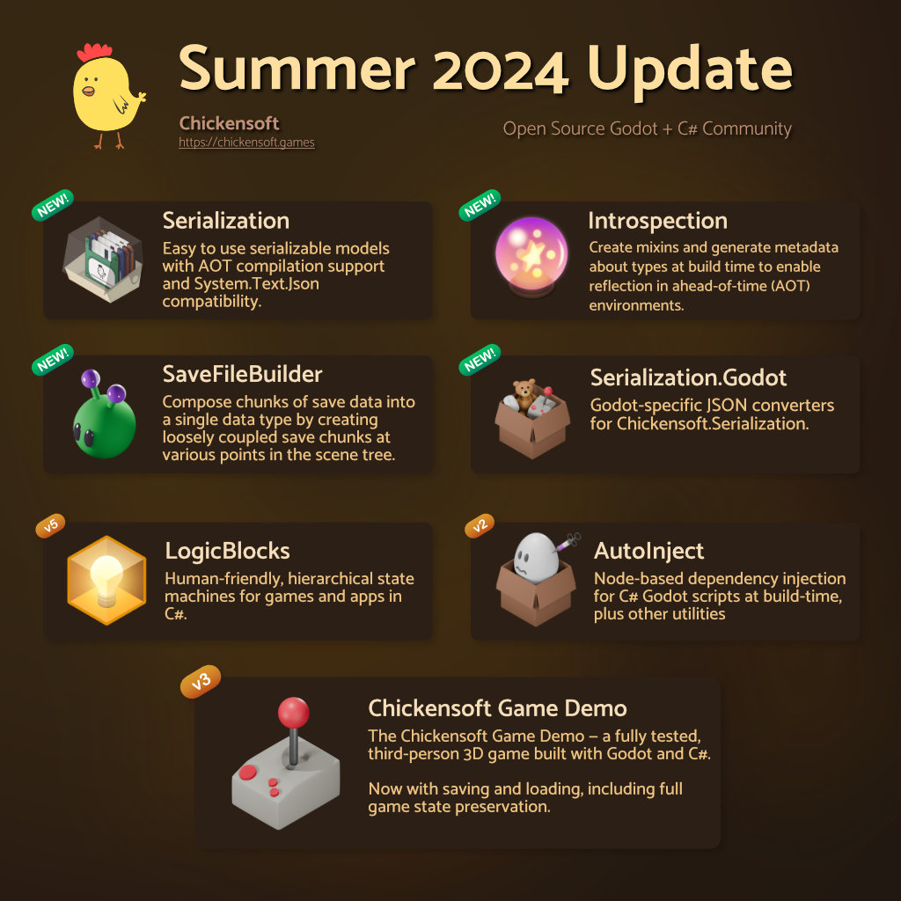
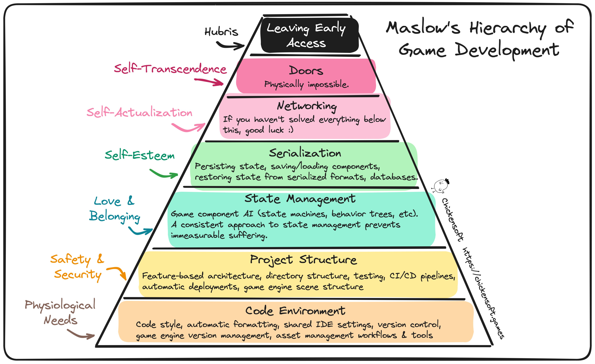

Serialization for C# Games
Serialization is incredibly important to games, and often painfully difficult to implement well. Unless you just like building serializers, you may find yourself putting off developing a save/load system, especially if you need more than just a simple "what level am I on?" mechanism.
🪤 The Serialization Trap
Like compilers, game engines, video games, and operating systems, serialization is a bit of a siren's call for programming enthusiasts. It seems easy at first: just write some data to a file — done!
But...what do you do with the data once you read it back from the file? What if the save file is outdated and your models have changed? How do you reconstruct a hierarchical state machine? What about translating saved data into polymorphic models that describe your game? And if you manage to solve that, how do you pass them through the scene tree to rehydrate your game's save state?
🧑⚕️ Serialization for Everyone
For the last 6 months, I've been exploring answers to the questions above. I am releasing 3 major updates to existing packages, as well as 4 completely new packages that I'm really excited to share with you.

There's a better way to make games now — with a fully open source stack. If this sounds interesting to you, strap in — it's going to be a long ride.
💾 What Makes a Good Save System?
A good save system, in my opinion, should meet the following criteria:
- 🔮 Works when compiled ahead-of-time. A general purpose serialization toolchain needs to work on the lowest common denominator of platforms — iOS.
AOT is a steep requirement for serialization, as it essentially condemns you to generating metadata about types at build time.
-
🔘 Opt-in by default. Sometimes you want to extend a non-serializable class that you don't control and make it serializable.
-
⤵️ Polymorphic deserialization. It needs to be easy to deserialize explicit implementations of an abstract type.
-
🔄 Collections. Even if you don't intend to support generic types, properly implementing collections is non-trivial.
-
📦 Versioning. Models change as a game evolves, and you don't want to break existing save files.
-
🪝 Serialization Hooks — for types with custom serialization logic or types outside the assembly whose metadata can't be generated.
Now that we know what a good serialization system looks like, let's talk about how its done.
🙋♀️ Why Make a Serializer? 1
The .NET ecosystem has slowly begun to embrace an AOT-friendly world, and System.Text.Json can now generate metadata about types at build time.
The new serialization system we've introduced is built on top of System.Text.Json. Because of this shared foundation, it can interop seamlessly with existing generated JSON contexts and converters.
Why build a new serializer on top of System.Text.Json if it can already do AOT serialization just fine? Unfortunately, System.Text.Json has a few pain points:
-
Doesn't help with versioning.
-
Derived types are painful — you have to manually register them on the base type.
Essentially, you have to keep a registry of all derived types in a place unrelated to the type itself. Manually tracking types is incredibly error-prone and hostile to refactoring type hierarchies — a common activity if you're using hierarchial state machines.
- Doesn't support serialization hooks. You have to make a custom converter for every type that needs custom serialization logic.
Since we are designing for a specific use case — saving and loading game files — we can make a solution that's tailored to exactly that. Plus, we can still leverage the amazing foundation that System.Text.Json provides.
🔮 Generating Metadata at Build Time
If we're going to make an AOT-friendly serialization system, we're going to need metadata about types. We've already established that the metadata generated by System.Text.Json requires us to write rather unfriendly code that is going to be a pain to refactor, so we can't rely on the System.Text.Json source generator.
We're going to have to make our own.
🔮 Introducing the Introspection Generator
The new Introspection generator is now the backbone of all the major Chickensoft libraries that need metaprogramming capabilities. It automatically generates a registry of every type that is visible from the global scope, including nested types.
Chickensoft.Introspection on GitHub
TypeRegistry.g.cs Example
An abbreviated version of the entries in a generated type registry. Not particularly interesting unless you just like writing serializers.
:::info
The generic form of `Activator.CreateInstance[typeof(PartialModel)] = new IdentifiableTypeMetadata("PartialModel", (r) => r.Receive<PartialModel>(), () => System.Activator.CreateInstance<PartialModel>(), new PartialModel.MetatypeMetadata(), "multiple_partial_definitions", 1),
[typeof(PropertyModel)] = new AbstractIntrospectiveTypeMetadata("PropertyModel", (r) => r.Receive<PropertyModel>(), new PropertyModel.MetatypeMetadata()),
[typeof(SomeType)] = new IntrospectiveTypeMetadata("SomeType", (r) => r.Receive<SomeType>(), () => System.Activator.CreateInstance<SomeType>(), new SomeType.MetatypeMetadata(), 1),
[typeof(StaticPropertyIsSkipped)] = new IntrospectiveTypeMetadata("StaticPropertyIsSkipped", (r) => r.Receive<StaticPropertyIsSkipped>(), () => System.Activator.CreateInstance<StaticPropertyIsSkipped>(), new StaticPropertyIsSkipped.MetatypeMetadata(), 1),
[typeof(TraditionalNamespace.A)] = new ConcreteTypeMetadata("A", (r) => r.Receive<TraditionalNamespace.A>(), () => System.Activator.CreateInstance<TraditionalNamespace.A>()),
[typeof(TraditionalNamespace.A.AA)] = new ConcreteTypeMetadata("AA", (r) => r.Receive<TraditionalNamespace.A.AA>(), () => System.Activator.CreateInstance<TraditionalNamespace.A.AA>()),
Better yet, the new Introspection generator is designed for performance: it generates all of its data without using any analyzer symbol data — just the syntax tree — making it pretty dang fast. It also deprecates our previous generator, SuperNodes, that was not as capable or performant.
You can read all about it on the Introspection repository. The general idea is that it allows you to tag types that are introspective with the [Meta] attribute. Introspective types have additional metadata generated about them, including their attribute information, their properties, and the attributes on their properties, among other things.
IntrospectiveType.g.cs Example
An abbreviated version of the generated metadata for an introspective type.
[ExcludeFromCodeCoverage]
public MixinBlackboard MixinState { get; } = new();
[ExcludeFromCodeCoverage]
public IMetatype Metatype => ((IIntrospectiveTypeMetadata)Types.Graph.GetMetadata(typeof(IntrospectiveType))).Metatype;
public class MetatypeMetadata : IMetatype {
[ExcludeFromCodeCoverage]
public System.Type Type => typeof(IntrospectiveType);
[ExcludeFromCodeCoverage]
public bool HasInitProperties { get; } = true;
[ExcludeFromCodeCoverage]
public IReadOnlyList<PropertyMetadata> Properties { get; } = new List<PropertyMetadata>() {
new PropertyMetadata(
Name: "Address",
IsInit: false,
IsRequired: false,
Getter: (object obj) => ((IntrospectiveType)obj).Address,
Setter: (object obj, object? value) => ((IntrospectiveType)obj).Address = (string)value,
GenericType: new GenericType(
OpenType: typeof(string),
ClosedType: typeof(string),
Arguments: System.Array.Empty<GenericType>(),
GenericTypeGetter: receiver => receiver.Receive<string>(),
GenericTypeGetter2: default
),
Attributes: new Dictionary<System.Type, System.Attribute[]>() {
[typeof(TagAttribute)] = new System.Attribute[] {
new TagAttribute("address")
}
}
),
new PropertyMetadata(
Name: "Age",
IsInit: true,
IsRequired: true,
Getter: (object obj) => ((IntrospectiveType)obj).Age,
Setter: null,
GenericType: new GenericType(
OpenType: typeof(int),
ClosedType: typeof(int),
Arguments: System.Array.Empty<GenericType>(),
GenericTypeGetter: receiver => receiver.Receive<int>(),
GenericTypeGetter2: default
),
Attributes: new Dictionary<System.Type, System.Attribute[]>() {
[typeof(TagAttribute)] = new System.Attribute[] {
new TagAttribute("age")
}
}
),
new PropertyMetadata(
Name: "Description",
IsInit: true,
IsRequired: false,
Getter: (object obj) => ((IntrospectiveType)obj).Description,
Setter: null,
GenericType: new GenericType(
OpenType: typeof(string),
ClosedType: typeof(string),
Arguments: System.Array.Empty<GenericType>(),
GenericTypeGetter: receiver => receiver.Receive<string>(),
GenericTypeGetter2: default
),
Attributes: new Dictionary<System.Type, System.Attribute[]>() {
[typeof(TagAttribute)] = new System.Attribute[] {
new TagAttribute("description")
}
}
),
new PropertyMetadata(
Name: "Name",
IsInit: true,
IsRequired: true,
Getter: (object obj) => ((IntrospectiveType)obj).Name,
Setter: null,
GenericType: new GenericType(
OpenType: typeof(string),
ClosedType: typeof(string),
Arguments: System.Array.Empty<GenericType>(),
GenericTypeGetter: receiver => receiver.Receive<string>(),
GenericTypeGetter2: default
),
Attributes: new Dictionary<System.Type, System.Attribute[]>() {
[typeof(TagAttribute)] = new System.Attribute[] {
new TagAttribute("name")
}
}
)
};
[ExcludeFromCodeCoverage]
public IReadOnlyDictionary<System.Type, System.Attribute[]> Attributes { get; } = new Dictionary<System.Type, System.Attribute[]>() {
[typeof(IdAttribute)] = new System.Attribute[] {
new IdAttribute("init_args_model")
},
[typeof(MetaAttribute)] = new System.Attribute[] {
new MetaAttribute()
}
};
[ExcludeFromCodeCoverage]
public IReadOnlyList<System.Type> Mixins { get; } = new List<System.Type>() {
};
[ExcludeFromCodeCoverage]
public IReadOnlyDictionary<System.Type, System.Action<object>> MixinHandlers { get; } = new Dictionary<System.Type, System.Action<object>>() {
};
[ExcludeFromCodeCoverage]
public object Construct(IReadOnlyDictionary<string, object?>? args = null) {
args = args ?? throw new System.ArgumentNullException(nameof(args), "Constructing IntrospectiveType requires init args.");
return new IntrospectiveType() {
Address = args.ContainsKey("Address") ? (string)args["Address"] : default!,
Age = args.ContainsKey("Age") ? (int)args["Age"] : default!,
Description = args.ContainsKey("Description") ? (string)args["Description"] : default!,
Name = args.ContainsKey("Name") ? (string)args["Name"] : default!
};
}
[ExcludeFromCodeCoverage]
public override bool Equals(object obj) => true;
[ExcludeFromCodeCoverage]
public override int GetHashCode() => base.GetHashCode();
}
You don't have to fully understand the generated introspection data to appreciate it. Basically, it makes all the stuff you'd ever need to write a decently polymorphic serialization system.
✅ Now any serializer we build on top of this will work when compiled ahead of time — done! Not so bad, right?
📦 Introducing the Serialization System
The new Serialization system builds off the Introspection generator, allowing you to define serializable types with relative ease.
Chickensoft.Serialization on GitHub
It isn't as powerful as the System.Text.Json generators, but it's tailored for writing simple, refactor-friendly code.
Here's what a serializable game model looks like.
using Chickensoft.Introspection;
using Chickensoft.Serialization;
using Godot;
[Meta, Id("player_data")]
public partial record PlayerData {
[Save("global_transform")]
public required Transform3D GlobalTransform { get; init; }
[Save("state_machine")]
public required PlayerLogic StateMachine { get; init; }
[Save("velocity")]
public required Vector3 Velocity { get; init; }
}
:::tip
The [Id] attribute tells the Introspection generator to generate additional metadata on top of the additional introspection data specific to "identifiable" types. The Serialization system and Introspection generator were designed in tandem, so they work together seamlessly, even though the Introspection generator has no knowledge of serialization. It just generates metadata.
:::
✅ Note how the serialization system is opt-in: just add the [Save] attribute and specify a json key name for the properties you wish to persist!
✅ It also works with collections. It provides support for the only 3 collections you should ever need when working with JSON: HashSet<T>, List<T>, Dictionary<TKey, TValue>. If you need something else, you're doing it wrong. (Or you can just use the System.Text.Json generator and make a serialization context, if you must get fancy).
✅ Oh, and it works with inheritance and abstract types, too. Check the Serialization readme for more usage details.
✅ Oh, and of course — versioning! Here's what a versioned model looks like.
[Meta, Id("log_entry")]
public abstract partial class LogEntry : SystemLogEntry { }
[Meta, Version(1)]
public partial class LogEntry1 : LogEntry, IOutdated {
[Save("text")]
public required string Text { get; init; }
[Save("type")]
public required string Type { get; init; }
public object Upgrade(IReadOnlyBlackboard deps) => new LogEntry2() {
Text = Text,
Type = Type switch {
"info" => LogType.Info,
"warning" => LogType.Warning,
"error" or _ => LogType.Error,
}
};
}
public enum LogType {
Info,
Warning,
Error
}
[Meta, Version(2)]
public partial class LogEntry2 : LogEntry {
[Save("text")]
public required string Text { get; init; }
[Save("type")]
public required LogType Type { get; init; }
}
The serialization system can even upgrade your out of date models while they're being deserialized, ensuring you never see an out-of-date type in your game logic.
✅ Finally, you can also implement custom serialization hooks on types that wish to customize how they are serialized. They have access to their JSON node, and can even return an entirely different object if they wish (as long as it is a derived type of the type being deserialized).
[Meta, Id("custom_serializable")]
public partial class CustomSerializable : ICustomSerializable {
public int Value { get; set; }
public object OnDeserialized(
IdentifiableTypeMetadata metadata,
JsonObject json,
JsonSerializerOptions options
) {
Value = json["value"]?.GetValue<int>() ?? -1;
return this;
}
public void OnSerialized(
IdentifiableTypeMetadata metadata,
JsonObject json,
JsonSerializerOptions options
) {
// Even though our property doesn't have the [Save] attribute, we
// can save it manually.
json["value"] = Value;
}
}
🥳 Now we've met all of our serialization requirements.
✨ But wait, there's more! A LOT more.
🤖 Godot-Specific Serialization
We also need to be able to serialize Godot-specific types, like transforms, vectors, etc. Fortunately, there's a new package containing a few System.Text.Json converters that can convert Godot types to JSON and back.
Chickensoft.Serialization.Godot on GitHub
It only supports a handful of types right now, so please — PLEASE — contribute to it if you can!
👽 Introducing SaveFileBuilder
Now that we can define beautiful, serializable models, how do we extract data from disparate nodes across the scene tree, and how do we return it to the relevant nodes (or create them) when we load the game?
Chickensoft SaveFileBuilder on GitHub
Meet SaveFileBuilder. It allows you to define a SaveFile as a tree of SaveChunks. Each SaveChunk may have its own children chunks. You can access each child chunk by its type to recursively construct the save file (or load it).
AutoInject should be used to find the nearest parent save chunk in the scene tree so that the child chunk can add itself to the parent.
SaveFile = new SaveFile<GameData>(
root: new SaveChunk<GameData>(
onSave: (chunk) => {
// Use root chunk to get child chunks that were added to us
// lower in the scene tree.
var gameData = new GameData() {
MapData = chunk.GetChunkSaveData<MapData>(),
PlayerData = chunk.GetChunkSaveData<PlayerData>(),
PlayerCameraData = chunk.GetChunkSaveData<PlayerCameraData>()
};
return gameData;
},
onLoad: (chunk, data) => {
// Break up the game data and send it to the child chunks so that
// they can load the data into the nodes they belong to.
chunk.LoadChunkSaveData(data.MapData);
chunk.LoadChunkSaveData(data.PlayerData);
chunk.LoadChunkSaveData(data.PlayerCameraData);
}
),
onSave: async (GameData data) => {
// Save the game data to disk.
var json = JsonSerializer.Serialize(data, JsonOptions);
await FileSystem.File.WriteAllTextAsync(SaveFilePath, json);
},
onLoad: async () => {
// Load the game data from disk.
if (!FileSystem.File.Exists(SaveFilePath)) {
GD.Print("No save file to load :'(");
return null;
}
var json = await FileSystem.File.ReadAllTextAsync(SaveFilePath);
return JsonSerializer.Deserialize<GameData>(json, JsonOptions);
}
);
In the future, this can be expanded on by creating an async variety. Asynchronicity would allow you to define save chunks that can split loading and saving into multiple operations, streamlining the most complex save scenarios imaginable.
💡 Serializing Hierarchical State Machines
LogicBlocks, our hierarchical state machine implementation, is now fully serializable, thanks to the version 5 update that was just released. It integrates seamlessly with the new Introspection generator and Serialization system.
Chickensoft LogicBlocks on GitHub
LogicBlocks 5 will now automatically preallocate states when constructed, thanks to the generated metadata that allows it to see every possible state ahead of time.
:::info Unrelated, but the new performance updates LogicBlocks 5 receives also eliminates runtime memory allocations, except in scenarios where the number of inputs or input types exceeds the input buffer size. :::
[Meta, Id("serializable_logic")]
[LogicBlock(typeof(State), Diagram = true)]
public partial class MyLogicBlock : LogicBlock<MyLogicBlock.State> {
public override Transition GetInitialState() => To<State.PoweredOff>();
[Meta]
public abstract partial record State : StateLogic<State> {
[Meta, Id("serializable_logic_state_off")]
public partial record PoweredOff : State;
[Meta, Id("serializable_logic_state_on")]
public partial record PoweredOn : State;
[Meta, Id("serializable_logic_versioned_state")]
public abstract partial record VersionedState : State;
[Meta, Version(1)]
public partial record Version1 : VersionedState;
[Meta, Version(2)]
public partial record Version2 : VersionedState;
}
}
Oh — and LogicBlocks now has an all new documentation site! There's never been a better time to embrace the magic and rigor of statecharts.
💉 A Better AutoInject
AutoInject is our node-based dependency injection system. It allows you to find dependencies by searching ancestor nodes for the first node that has the dependency you're looking for. It's as simple as it sounds, at least in theory (the devil is in the implementation details).
Chickensoft AutoInject on GitHub
Previously, AutoInject was built on top of SuperNodes. Now that SuperNodes has been deprecated and replaced with the new Introspection generator, the PowerUps package (a set of mixins designed to work with AutoInject and SuperNodes) has also been deprecated. Fortunately, all of its functionality now lives inside AutoInject.
Like before, you can use the new Introspection generator to apply mixins. But, it's even simpler now — all of the mixins available in AutoInject can be applied at once:
// Apply all of the AutoInject mixins at once:
[Meta(typeof(IAutoNode))]
public partial class MyNode : Node { }
That one little line above allows you to automatically bind nodes to properties, inject dependencies, provide dependencies, and use .NET-style notification callbacks and get additional lifecycle notifications that help with unit testing nodes, if that's your jam. Be sure to checkout the AutoInject repository for more details.
🕹️ Saving & Loading in the Game Demo
Of course, no long-winded blog announcing a bunch of new packages would be complete without a demo. The Chickensoft Game Demo has been updated to version 3, and now includes full state persistence and restoration, thanks to all these new tools.
Chickensoft GameDemo on GitHub
If you're still fuzzy on the details, go check out the code and take a closer look. There's also nearly 300 unit tests that can help show you how any particularly part of the code works, too.
Conclusion
We'll close by celebrating the fact that Chickensoft has now reached a new layer of the gamedev hierarchy of needs: serialization. Now we can start solving the real problems.

If you made it this far, thanks for reading — and happy serializing!
Join our Discord: https://discord.gg/MjA6HUzzAE
-
It's actually too late. I've already made one. ↩